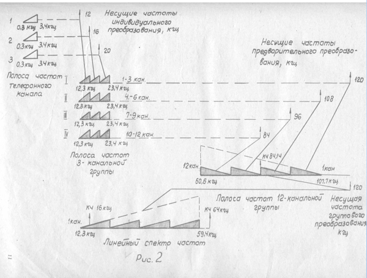
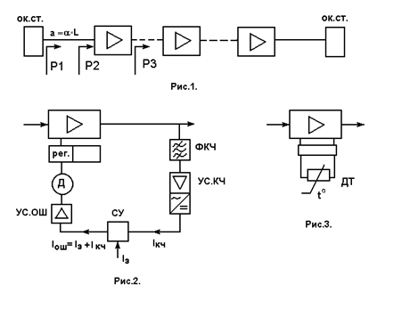

Тема №3. Устройство и эксплуатация систем передачи с частотным разделением каналов
Занятие №7. Функциональная схема аппаратуры П-302-О.
Учебные вопросы:
Литература:
- Многоканальные системы передачи, Ч.1. Теоретические основы построения МСП. – Мн.: БГУИР, 2010.
- Многоканальные системы передачи (часть 2). Учебно-методическое пособие «Аппаратура МКСП с ЧРК». – Мн.: БГУИР, 2010.
- Учебно-наглядное пособие «Альбом схем аппаратуры МКСП». – Мн.: БГУИР, 2010.
- Аппаратура П-302 (учебное пособие). – Орел: ОВВУС, 1979.
- Кирилов В.И. Учебное пособие «Многоканальные системы передачи»: – М.: Новое знание, 2003.
1. Функциональная схема тракта передачи.
Индивидуальное оборудование
Разговорные токи со стороны кросса при 2-проводном режиме работы телефонного канала (гнезда "ДС 1"; "2-ПР."; "ТЛФ КАНАЛЫ"; 1СЛ.ПР." щита ЩКНЧ П-302-0 соединены шнуром) со щита ЩКНЧ П-302-0 поступают на блок ДСВ-3 упаковки ДСВ на удлинитель с затуханием 0,4 Нп. Удлинитель предна-значен для обеспечения необходимого уровня в канале при работе его в оконечном режиме. При работе канала в режиме 2-проводного транзитного соединения удлинитель выключается посредством перестановки перемычки из положения "ОК" в положение "ТР.". Далее разговорные токи поступают на дифференциальную систему (ДС), с помощью которой осуществляется переход с 2-проводной на 4-проводную схему канала. В передающем тракте дифсистемы включен ограничитель амплитуд, который предотвращает перегрузку телефонного канала. Включенный в тракте передачи удлинитель с затуханием 0,4 Нп является эквивалентом затухания соединительной линии, по которой цепи ДС подаются к аппаратуре при размещении упаковки ДСВ на удалении от аппаратуры. Компенсация затухания соединительной линии осуществляется путем выключения удлинителя посредством перепайки на его контактах.
С выхода упаковки ДСВ разговорные токи поступают на щит ЩКНЧ, проходят шнур, соединяющий гнездо "ПЕР.КАН.1" под общей гравировкой "ДС" и гнездо "ПЕР.КАН.1" под общей гравировкой "ТЛФ КАНАЛЫ", удлинитель 2 Нп, предназначенный для обеспечения необходимого уровня при работе канала в режиме 4-проводного транзита. В оконечном режиме он выключен перестановкой перемычки из положения "ТР" в положение "ОК".
Со щита разговорные токи поступают на упаковку индивидуального и предварительного преобразования (ИПП-12). Измерительный уровень сигнала на входе канала в упаковке ИПП-12 равен -1,5 Нп (-13 дБ), входное сопротивление тракта канала 600 Ом. При 4-проводном режиме работы токи на вход канала в упаковку ИПП-12 подаются непосредственно со щита ЩКНЧ через перемычку, установленную в гнезда "СЛ.ПЕР." и "КАН.1 ПЕР." под общей гравировкой "ОК".
В тракте передачи каждого канала включен индивидуальный преобразователь (ПИ), в котором происходит преобразование разговорных токов с помощью несущих частот 12, 16 и 20 кГц в токи частот 3-канальной группы с полосой частот 12,3-23,4 кГц. На входе каждого преобразователя ПИ включен переменный удлинитель с затуханием 1+0,2 Нп (на схеме не показан), который служит для снижения уровня преобразуемого сигнала до значения, обеспечивающего нормальную работу преобразователя, а также для обеспечения входного сопротивления тракта передачи канала. Кроме того с помощью удлинителя обеспечивается регулировка уровня в тракте передачи канала в пределах +0,2 Нп с точностью 0,05 Нп. На выходе преобразователя включен полосовой фильтр ФК-1 (ФК-2, ФК-3), служащий для подавления неиспользуемой нижней боковой полосы частот и остатка тока несущей частоты и выделения верхней боковой полосы частот. Удлинитель с затуханием 0,3 Нп, включенный после фильтра ФК-1 (ФК-2, ФК-3), обеспечивает необходимый уровень сигнала -4,0 Нп на входе груп-пового преобразователя (ПГ). Точки каждой 3-канальной группы, пройдя через перемычки на упаковке ИПП-12, установленные в положение "ТФ", проступают на преобразователи ПГ, в которых с помощью несущих частот 84, 96, 108 и 120 кГц происходит преобразование токов полосы частот 12,3-23,4 кГц в токи частот основной 12-канальной группы 60,6-107,7 кГц. Полосовые фильтры ФП-1, ФП-2, ФП-3, ФП-4 применяются для выделения токов нижней боковой полосы частот на выходе преобразователей ПГ и подавления токов несущих частот, верхней боковой полосы частот и прочих продуктов преобразования. Включение полосовых фильтров ФП в общий тракт осуществляется с помощью ДС, обеспечивающей развязку фильтров, соседних по полосе пропускания.
Токи 12-канальной группы поступают на вход усилителя Ус 60-108, кото-рый обеспечивает необходимый измерительный уровень по мощности -4,5 Нп на выходе передающей части упаковки ИПП-12. После усилителя Ус 60-108 токи 12-канальной группы поступают на заграждающий фильтр ФЗК-84,14, который включен для защиты контрольного канала 84,14 кГц от мешающего воздействия на него разговорных токов. Фильтр ФЗК-84,14 подавляет также ток контрольной частоты 84,14 кГц, который попадает с тракта приема другой аппаратуры при транзитных соединениях по широким каналам ШК-12 и может оказать влияние на уровень контрольной частоты 84,14 кГц на выходе аппаратуры. Далее токи поступают на дифсистему ДС-1, которая вместе с дифсистемой ДСК предназначена для ввода в тракт передачи контрольной частоты 84,14 кГц и подключения канала широкого вещания. Включенный после дифсистемы (ДС) удлинитель с затуханием 0,3 Нп предназначен для обеспечения уровня -4,5 Нп на выходе тракта передачи упаковки ИПП-12. Контрольная частота 84,14 кГц в тракт передачи подается с уровнем на 2,9 Нп ниже измерительного уровня сигнала и предназначена для контроля диаграммы уровней в трактах передачи и приема 60-108 кГц.
С выхода упаковки ИПП-12 токи 12-канальной группы поступают через перемычку "ВЫХ.60-108" на щит ЩКВЧ П-302-0, с которого, пройдя через перемычку, соединяющую гнезда "ТЛФ" и "ГР." под общей гравировкой "ГР.60-108КГЦ", "ПЕР.", поступают на групповой преобразователь ПГ Пер, расположенный в упаковке группового оборудования ГО-12.
Групповое оборудование
В ПГ Пер., с помощью групповой несущей частоты 120 кГц, токи полосы частот 60,6-107,7 кГц, преобразуются в токи частот линейного спектра 12,3-59,4 кГц. Удлинители с затуханием 0,3 и 0,2 Нп на входе и выходе группового преобразователя (на схеме нет) предназначены для согласования выходных сопротивлений группового преобразователя с соседними узлами. Фильтр Д-62 обеспечивает подавление продуктов группового преобразования, лежащих выше нижней боковой полосы частот 12,3-59,4 кГц, а также служит для подавления токов, совпадающих в линейном тракте с током линейной контрольной частоты 64 кГц, вводимой в тракт передачи аппаратуры. Вспомогательный усилитель Ус.В12-108 повышает уровень токов на входе усилителя передачи (Ус.Пер.), что улучшает помехозащищенность тракта.
С выхода вспомогательного усилителя Ус.В12-108 токи поступают на заграждающий фильтр ФЗ-16, который предназначен для подавления остатка токов индивидуальных несущий частот и разговорных токов, совпадающих в линейном тракте по частоте с током линейной контрольной частоты 16 кГц, вводимой в тракт передачи аппаратуры.
После заграждающего фильтра ФЗ-16 установлен переключатель режимов ПР Пер., который имеет три положения: "0", "0,3" и "1,2". С помощью переключателя на выходе аппаратуры устанавливаются уровни, необходимые для работы аппаратуры П-302-0 по двухкабельной схеме совместно с аппаратурой П-300-0. При работе по однокабельной схеме удлинители выключены (переключатель в положении "0").
Пройдя переключатель ПР Пер., токи поступают на вход Ус.Пер. На вход Ус.Пер. подаются также линейные контрольные частоты 16 и 64 кГц, которые предназначены для контроля за состоянием линейного тракта магистрали. Уровни этих частот в групповом тракте аппаратуры на 2,0 Нп ниже измерительного уровня сигнала. Для установки в групповом трате требуемого уровня частот 16 и 64 кГц предусмотрены регуляторы контрольных частот (РКЧ), выведенные на лицевую панель блока ГП Пер. Контрольные частоты выключаются из тракта с помощью 2-проводных перемычек, которые вынимаются из гнезд с гравировкой "16" или "64" (на лицевой панели блока ГП Пер.).
С выхода Ус.Пер. токи полосы частот 12,3-59,4 кГц через перемычку, установленную в гнездо "ВЫХ." поступают на упаковку ВКО-12, проходят восьмиконтактную перемычку под общей гравировкой "РЕЖИМ РАБОТЫ", установленную в положение "1-КАБ." и поступают на трансформатор Тр3 и фильтр К-2-II, затем на линейный трансформатор Тр1, проходят перемычку, установленную в гнездах "СТ." и "КАБ." и далее на вводный разъем этой же упаковки с гравировкой "КАБ.1" с уровнем -0,1 Нп. Линейный трансформатор Тр1 служит для согласования входного сопротивления кабеля со входным сопротивлением вилки фильтров ДК-2-II, равным 600 Ом. Кроме того в среднюю точку линейной обмотки трансформатора Тр1 через перемычку "ДП" вводится один полюс цепи дистанционного питания (положительный). Фильтры ДК-2-II служат для разделения трактов ВЧ аппаратуры и тракта канала служебной связи. Трансформатор Тр3 согласовывает 600-омное сопротивление фильтра К-2-II со 135-омным входным сопротивлением ли-нейного тракта аппаратуры.
2. Функциональная схема тракта приема.
Групповое оборудование
Токи полосы частот 12,3-59,4 кГц с кабельной магистрали поступают на контакты вводного разъема упаковки ВКО-12 с гравировкой "КАБ.1". С контактов разъема токи поступают через перемычку "СТ." и "КАБ." в тракте приема на линейный трансформатор Тр2, фильтр К-2-II, трансформатор Тр4, восьмиконтактную перемычку, установленную в положение "1-КАБ." и, минуя удлинитель 0,5 Нп поступают на упаковку ЛО-12. Назначение узлов входных устройств в тракте приема упаковки ВКО-12 аналогично назначению соответствующих узлов в тракте передачи. В среднюю точку линейной обмотки трансформатора Тр2, через перемычку "ДП", вводится второй полюс цепи дистанционного питания (-ДП).
Токи линейной полосы частот 12,3-59,4 кГц поступают в упаковке линейного оборудования ЛО-12 на фильтр Д-64, ограничивающий полосу частот и подавляющий токи помех, которые могут поступать с магистрали. С выхода фильтра Д-64 токи поступают на искусственные линии (ЛИ). Эти линии по своим частотным характеристикам являются эквивалентами участков кабельной магистрали соответствующей длины и служат для дополнения реальной длины кабельного участка до расчетной (15 км).
С выхода ЛИ токи поступают на вход усилителя, состоящего из амплитуд-ного выравнивателя (ВА-24), линейного усилителя Ус.Л-12 и устройства автоматической регулировки усиления АРУП.
Амплитудный выравниватель ВА-24) предназначен для компенсации искажений, вносимых участком кабеля длиной 15 км при температуре +5 С.
Далее токи поступают на линейный усилитель Ус.Л-12. Устройство АРУП, подключенное к Ус.Л-12 выполняет функции плоского регулятора усиления. В случае необходимости, автоматическая плоская регулировка усиления в УС.Л-12 может быть заменена ручной (регулятор с гравировкой "РП2"). С выхода Ус.Л-12 токи полосы частот 12,3-59,4 кГц поступают на регулятор РП, позволяющий регулировать уровень сигнала, и с него - на контур криволинейной регулировки (ККР). ККР предназначен для коррекции неравномерности частотной характеристики, вносимой магистралью. Включенный на выход ККР фильтр К-6 служит для подавления токов контрольных частот НУП, поступающих с линии, чтобы не допустить их попадания в тракт приема. Далее токи полосы частот 12,3-59,4 кГц поступают на вспомогательный усилитель Ус-12, который, совместно с устройством АРУН, осуществляет наклонную регулировку усиления. Усилительный каскад Ус-12 обеспечивает необходимую мощность токов на выходе упаковки ЛО-12. С выхода Ус.-12 полностью откорректированные токи с уровнем 0,0 Нп поступают на упаковку ГО-12.
С выхода усилителя Ус.-12 токи также поступают к высокоомному входу приемника контрольных каналов ПКК-64-16, который предназначен для управления устройством автоматической регулировки усиления линейных усилителей в соответствии с изменениями затухания участка кабельной линии. С помощью контрольной частоты 64 кГц осуществляется плоская, не зависящая от частоты, регулировка усиления, а с помощью контрольной частоты 16 кГц - наклонная регулировка, пропорциональная изменения частоты передаваемых сигналов. К выходу Ус.Л-12 подключено устройство для дистанционного контроля исправности НУП и определения номера неисправного НУП или поврежденного участка кабельной магистрали.
С выхода упаковки ЛО-12 токи полосы частот 12,3-59,4 кГц поступают на упаковку ГО-12, проходят через перемычку "ВХ." И поступают на симметри-рующий трансформатор (СТ), который обеспечивает переход с уравновешенной схемы линейного тракта на неуравновешенную и далее на переключатель режимов ПР Пр., который имеет три положения: "3,7", "3,4" и "2,5". С помощью переключателя ПР Пр. обеспечивается сохранение неизменной диаграммы уровней при их повышении на выходе тракта передачи ( с помощью переключателя ПР Пер.) в зависимости от режима работы. При работе по однокабельной схеме включен удлинитель 3,7 Нп (переключатель ПР пр. в положении "3,7"). Включение любого из удлинителей (в рассматриваемом случае - это удлинитель затуханием 3,7 Нп) обеспечивает понижение уровня токов, поступающих на вход заграждающего фильтра ФЗ-16 для умень¬шения вносимых этим фильтром нелинейных искажений, а также обеспечивает необходимый уровень на входе преобразователя ПГ Пр. Заграждающий фильтр ФЗ-16, подавляя ток частоты 16 кГц в приемном тракте совместно с таким же фильтром в передающем тракте, обеспечивают необходимую защищенность между токами линейных контрольных частот различных аппаратур при транзитных соединениях по широким каналам ШК-12. Фильтр Д-62 служит для защиты телефонных каналов от шумов, возникающих за счет помех линейного тракта, находящихся в спектре верхней боковой полосы частот 180-228 кГц. Токи этих помех после преобразования ПГ Пр. попадают в спектр частот 12-канальной группы 60,6-107,7 кГц. Кроме этого фильтр Д-62 подавляет ток контрольной частоты 64 кГц препятствуя ее попаданию в тракт приема и, таким образом, совместно с фильтром Д-62 в передающем тракте обеспечивает необходимую защищенность между токами линейных контрольных частот 64 кГц различных аппаратур при транзитных соединениях по широким каналам ШК-12.
С выхода фильтра ФЗ-16 и Д-62 токи полосы частот 12,3-59,4 кГц с измерительным уровнем -4 Нп, поступают на групповой преобразователь ПГ Пр., в котором с помощью несущей частоты 120 кГц происходит обратное преобразование токов частот 12,3-59,4 кГц в токи полосы частот основной 12-канальной группы 60,6-107,7 кГц. Удлинители с затуханием 0,3 Нп, включенные на входе и выходе ПГ Пр., обеспечиваю согласование входных сопротивлений группового преобразователя с фильтрами Д-62 и Д-115. Фильтр Д-115 включен для подавления на выходе ПГ Пр продуктов преобразования, лежащих выше полезной боковой полосы частот 60,6-107,7 кГц.
С выхода фильтра Д-115 токи поступают на усилитель Ус.60-108, который предназначен для обеспечения необходимого уровня на входе индивидуального оборудования (-0,6 Нп) и коррекции искажений, вносимых групповым оборудованием тракта приема аппаратуры. В усилителе Ус.60-108 предусмотрены корректирующие контуры, с помощью которых возможно выравнивать амплитудно-частотные искажения в полосе частот 60,6-107,7 кГц, обусловленные узлами групповых трактов, в пределах до 0,15 Нп на верхних граничных частотах и до 0,2 Нп на нижних граничных частотах. Регулировка осуществляется перепайкой ступенями до 0,05 Нп. В усилителе имеется возможность точной регулировки усиления в пределах +0,4 Нп с помощью регулятора усиления. Регулятор усиления имеет диск с зеленым и красным секторами и среднюю отметку у прорези лицевой панели блока ГП Пр. При установке номинального измерительного уровня -0,6 Нп на выходе усилителя у средней отметки должен быть зеленый сектор диска. Установка у средней отметки одного из красных секторов диска (при уровне на выходе -0,6 Нп) указывает на предельные значения усиления в групповом тракте.
На выходе усилителя Ус.60-108 имеется контрольный выход, гнездо "КЧ" для проверки уровня первичной группы по контрольной частоте 84,14 кГц. С выхода Ус.60-108, пройдя перемычку, установленную в гнездах "ГР." "ТЛФ", "ПРИЕМ" на щите ЩКВЧ П-302-0 поступает на упаковку ИПП-12.
Индивидуальное оборудование
В тракте приема упаковки ИПП-12 токи полосы частот 60,6-107,7 кГц проходят через перемычку "ВХ.60-108", попадают на удлинитель с затуханием 0,9 Нп, на дифсистему для отвода тракта приема канала широкого вещания и удлинитель с затуханием 1,1 Нп. Оба удлинителя с общим затуханием 0,2 Нп предназначены для обеспечения требуемой диаграммы уровней в тракте приема упаковки ИПП-12. Удлинитель с затуханием 0,9 Нп включен перед дифсистемой ДС-2 для поддержания уровня -1,9 Нп на выходе канала вещания. Заграждающий фильтра ФЗК-84,14, включенный в тракте приема за удлинителем, предназначен для подавления тока контрольной частоты 84,14 кГц, что обеспечивает снижение уровня помех в 6 и 7-м телефонных каналах 12-канальной группы, а также снижение уровня тока контрольной частоты 84,14 кГц, который попадает из тракта приема в тракт передачи другой аппаратуры при соединениях по широким каналам ШК-12 и может оказать влияние на уровень контрольной частоты 84,14 кГц. Токи поступают на входы полосовых фильтров ФП-1, ФП-2, ФП-3, ФП-4, которые служат для выделения частотных полос 3-канальных групп из диапазона частот 60-108 кГц. Соединение входов фильтров между собой осуществляется с помощью дифсистемы ДС, аналогично тому, как это сделано в передающем тракте оборудования. Удлинитель с затуханием 0,5 Нп включен для согласования выхода фильтра ФП со входом преобразователя ПГ. В преобразователях ПГ токи выделенных фильтрами ФП полос частот преобразуются с помощью несущих частот 84, 96, 108 и 120 кГЦ в токи частот 3-канальной группы 12,3-23,4 кГц. Включенные после групповых преобразователей фильтры Д-24 обеспечивают подавление продуктов преобразования с частотами выше частоты 24 кГц. Поступая далее на усилитель Ус.12-24 токи полосы частот 12,3-23,4 кГц усиливаются и с измерительным уровнем -1,6 Нп подаются в тракт приема каналообразующего оборудования 3-канальаной группы через перемычку, установленную в положение "ТФ". На входе тракта для понижения уровня включен удлинитель с затуханием 0,5 Нп.
Токи с помощью канальных фильтров ФК-1, ФК-2, ФК-3 распределяются и попадают в индивидуальные тракты приема телефонных каналов. В тракте приема каждого канала токи с выхода фильтра ФК попадают на индивидуальный преобразователь ПИ, где, взаимодействуя с токами индивидуальных несущих частот 12, 16 и 20 кГц, преобразуются в токи полосы частот 0,3-3,4 кГц. Эта полоса частот выделяется фильтром нижних частот (ФНЧ), который служит также для подавления остатка токов несущих частот и прочих продуктов преобразования.
С выхода ФНЧ токи поступают на переменный удлинитель, регулятор усиления (РУ) и усилитель низкой частоты (УНЧ). УНЧ предназначен для усиления токов полосы частот 0,3-3,4 кГц уровень которых снизился в результате преобразования. В усилителе УНЧ предусмотрена возможность коррекции амплитудно-частотных искажений, вносимых канальным оборудованием. Коррекция обеспечивается с помощью переменных корректи-рующих контуров, включенных в цепь обратной связи усилителя УНЧ. На входе усилителя низкой частоты осуществляется точная регулировка уровня каждого канала в пределах +0,5 Нп с помощью регулятора РУ на одиннадцать положений. Грубая регулировка уровня на входе усилителя УНЧ производится с помощью удлинителей с затуханием 0,2; 0,1 Нп, обеспечивающих пределы регулировки от 0 до 0,3 Нп.
Токи с выхода усилителя УНЧ с уровнем +0,5 Нп поступают на щит ЩКНЧ П-302-0, проходят шнур, соединяющий гнезда "ПР." "1 КАН." под гравировкой "ТЛФ КАНАЛЫ" и "ПР." "КАН.1" под общей гравировкой "ДС" (при 2-проводном режиме работы канала), затем поступают на упаковку ДСВ, проходят дифсистему, с помощью которой к тракту приема канала подключается приемник тонального вызова (ПТВ), и через удлинитель с затуханием 0,4 Нп поступают на дифсистему, затем в 2-проводную часть канала через транзитный удлинитель 0,4 Нп и с уровнем -0,8 Нп снова на щит ЩКНЧ П-302-0.
Со щита ЩКНЧ через шнур, соединяющий гнезда "2-ПП." "ДС" и "ПР" "1 СЛ" "ТЛФ КАН" токи поступают на кросс узла связи. Удлинитель с затуханием 0,4 Нп, включенный в приемном тракте, служит для компенсации затухания со-единительных линий в случае удаления упаковки ДСВ от аппаратуры.
При 4-проводном режиме работы токи с выхода УНЧ поступают на щит ЩКНЧ П-302-0, проходят перемычку, установленную в гнездах "ПР." "ПЕР." "КАН.1" и "ПР." "ПЕР." "1СЛ." и поступают на кросс узла связи.
В основных точках аппаратуры, в трактах приема и передачи, предусмотрены измерительные и разделительные гнезда, которые имеют гравировку с указанием значений уровней в этих точках. Эти гнезда предназначены для производства эксплуатационных измерений.
На функциональной схеме указаны, кроме того, уровни по мощности на выходе каждого узла аппаратуры и входные сопротивления узлов в измеряемой точке.
Состав, назначение и работа системы АРУ
Линейные контрольные частоты 16 и 64 кГц, вводимые в тракт передачи, пройдя магистраль, вместе с токами линейной полосы частот, попадают в тракт приема аппаратуры П-302-0 и с выхода Ус.-12 кроме основного тракта, поступают на вход блока ПКК-64/16, в котором расположены два отдельных приемника контрольных каналов ПКК-64 и П4КК-16. В блоке ПКК 64/16 ток каждой линейной контрольной частоты 16 и 64 кГц выделяется из общего спектра частот фильтром ФКК-16 или ФМ-4-64. Далее ток линейной контрольной частоты (ЛКЧ) поступает на усилители Ус.КЧ-16 или Ус.КЧ-64. Усиленные токи ЛКЧ выпрямляются и поступают на входы магнитоэлектрических регулирующих устройств (МРУ), где сравниваются с эталонным током. В зависимости от величины разностного тока меняется угол поворота рамки магнитоэлектричес¬кого двигателя МРУ. На одной оси с рамкой каждого МРУ расположен ротор переменного конденсатора, включенного в цепь управляющей обмотки трехкатушечного дросселя генератора 10 кГц (Ген.10). Величина тока на выходе Ген.10 зависит от положения переменного конденсатора МРУ, которое определяется величиной отклонения уровня ЛКЧ от номинального значения на выходе усилителя УС.-12. Усиленный и выпрямленный ток генераторов Ген.10 с выхода трехкатушечного дросселя поступает в цепь подогрева терморезистора контура, регулирующего усиление усилителя (в ДЦ АРУП для КЧ 64 кГц или АРУН для КЧ 16 кГц). В каждом ПКК предусмотрены реле блокировки (РБ), которые при скачкообразном изменении уровня КЧ более, чем на +(0,4+0,15 Нп), срабатывают и своими контактами замыкают цепь фиксации МРУ. Это позволяет сохранить значение тока подогрева терморезистора и то усиление соответствующего усилителя, которое имело место до изменения уровня.
В ПКК-64 имеется реле сигнализации пределов регулирования (РС), срабатывающее при значениях тока подогрева терморезистора, соответствующих изменению усиления линейного усилителя на +(0,9+0,2 (-0,1)) Нп. Для обеспечения стабильного напряжения питания цепей эталонного тока, реле РБ, РС и др., в состав каждого ПКК входит стабилизатор (СТАБ.).
Принцип действия АРУ
3. Устройство и принцип работы основного оборудования аппаратуры П-302-О.
Упаковка индивидуального и предварительного преобразования ИПП-12 – предназначена для преобразования разговорных токов 0,3-3,4 кГц в токи частот 3-канальной группы с полосой частот 12,3-23,4 кГц. с помощью несущих частот 12, 16 и 20 кГц и преобразования токов полосы частот 12,3-23,4 кГц в токи частот основной 12-канальной группы 60,6-107,7 кГц. с помощью несущих частот 84, 96, 108 и 120 кГц.
В состав упаковки ИПП-12 входят :
- Блок модулятора-демодулятора МД-3 – предназначен для преобразования разговорных токов 0,3-3,4 кГц в токи частот 3-канальной группы с полосой частот 12,3-23,4 кГц. с помощью несущих частот 12, 16 и 20 кГц.
- Блок предварительного группового преобразования передачи ПГП ПЕР – предназначен для преобразования токов полосы частот 12,3-23,4 кГц в токи частот основной 12-канальной группы 60,6-107,7 кГц. с помощью несущих частот 84, 96, 108 и 120 кГц., а также для обеспечения необходимого уровня сигнала на выходе упаковки.
Блок предварительного группового преобразования приёма ПГП ПР – предназначен для выделения частотных полос 3-канальных групп из диапазона частот 60-108 кГц. и преобразования их с помощью несущих частот 84, 96, 108 и 120 кГц в токи частот 3-канальной группы 12,3-23,4 кГц., а также для обеспечения необходимого уровня сигнала на выходе каждой трёхканальной группы.
Упаковка группового оборудования на двенадцать каналов ГО-12 в своем составе имеет:
- блок группового преобразования передачи (ГП Пер.) - 1 шт.
- блок группового преобразования приема (ГП Пр.) - 1 шт.
Кроме того в состав ГО-12 входит генераторное оборудование станции П-302-О.
Назначение и состав генераторного оборудования.
Генераторное оборудование предназначено для получения всех необходимых для работы станции частот, индивидуальных, групповых и кон-трольных.
Генераторное оборудование размещено в упаковке группового оборудования на 12 каналов (ГО-12) и включает в себя:
- блок генератора задающего 192 кГц (ГЗ-192);
- блок делителя частоты и генератора гармоник;
- блок индивидуальной несущей частоты 16 кГц и контрольной частоты 16 кГц (ИНЧ-16; КЧ-16);
- блок групповых несущих частот 84; 108 кГц (ГНЧ-84; 108);
- блок групповых несущих частот 96; 120 кГц (ГНЧ-96; 120);
- блок контрольной частоты 84, 14 кГц (КЧ-84, 14);
- блок контрольной частоты 64 кГц и групповой несущей частоты 120 кГц (КЧ-64; ГНЧ-120-1).
- усиление, ослабленных в результате прохождения по линии, сиг-налов многоканального телефонирования;
- коррекцию частотных искажений сигналов, вносимых линией при средней температуре +5 5О 0С;
- автоматическую или ручную коррекцию частотных искажений, появляющихся в линии под влиянием температурных воздействий, а также в результате разброса затухания отдельных участков кабеля.
- блок усилителя линейного (Ус.Л-12) - 1 шт.
- блок усилителя (Ус.-12) - 1 шт.
- блок приемников контрольных каналов (ПКК-64/16) - 1 шт.
- управление цепями автоматического регулирования усиления для обеспечения компенсации температурной зависимости затухания кабеля;
- сигнализация нарушений нормальной работы линейного тракта (от-клонение уровней КЧ за пределы допустимого, их полное пропадание).
Упаковка ЛО-12 предназначена для компенсации затухания усилительного участка длиной от 0 до 15 км в диапазоне частот 3...64 кГц.
Упаковка выполняет следующие основные функции:
В состав упаковки входят:
Блок линейного усилителя УС.Л-12
Блок УС.Л-12 обеспечивает компенсацию затухания участка кабеля длиной от 0 до 15 км в диапазоне частот 3...64 кГц.
Блок приемников контрольных каналов 64/16 кГц
Приемники контрольных каналов выполняют несколько функций. Основ-ными из них являются:
Кроме этого с помощью блока можно произвести определение времени проведения сезонных перепаек на НУП, а также сверять частоты генераторного оборудования противоположных оконечных или выделительных станций, за счет отвода частоты 16 кГц.
Упаковка ВКО-12 предназначена для ввода, защиты и коммутаций цепей кабельной линии связи их согласования с аппаратурой. Кроме того в упаковке происходит разделение спектров КСС и аппаратуры П-302, обеспечивается ввод дистанционного питания НУП и телеконтроль их технического состояния.
Блок контроля предназначен для контроля исправности НУП путем реги-страции контрольных частот НУП (3; 3,6; 4,2; 4,8; 5,4; 6 кГц). Уровень контрольных частот, поступающих на вход блока К, должен быть -4,0+0,6 Нп.